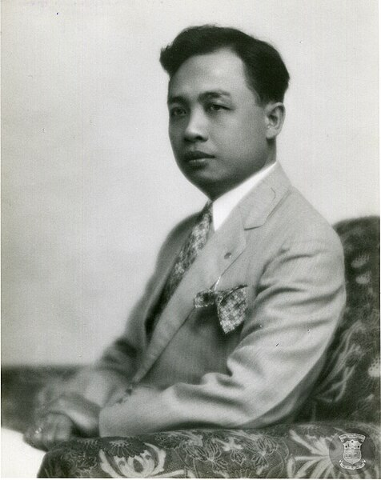

Bayan Muna, Bago ang Sarili: Muling Pagbuhay sa Nasyonalismong Pilipino
Si Claro M. Recto, isang higanteng pigura sa kasaysayan ng Pilipinas, ay nag-iwan ng hindi maipapawing marka sa ating pag-unawa sa nasyonalismo. Ang kanyang mga ideya, bagamat nakaugat sa isang tiyak na panahon, ay nananatiling lubhang may kaugnayan ngayon. Ang blog post na ito ay naglalayong tuklasin ang pananaw ni Recto sa nasyonalismong Pilipino at kung paano natin ito maipapamumuhay sa ating modernong konteksto
Ano ang Nasyonalismong Pilipino, Ayon kay Recto?
Para kay Recto, ang nasyonalismong Pilipino ay hindi lamang pagwagayway ng bandila o pagbigkas ng mga makabayang slogan. Ito ay isang malalim, maraming aspetong pagmamahal sa bansa – isang pakiramdam ng koneksyon, pagkakaisa, at responsibilidad sa kapwa Pilipino. Binigyang diin niya ang ilang mahahalagang sangkap:
- Pagmamahal sa Kultura at Wika: Ang pagpapahalaga sa ating iba't ibang tradisyon, sining, at wika ay mahalaga. Ito ang mga hibla na naghabi sa ating pambansang pagkakakilanlan.
- Paggalang sa Kasaysayan: Ang pag-unawa sa ating nakaraan – kapwa ang mga tagumpay at ang mga paghihirap – ay mahalaga. Nagbibigay ito ng konteksto para sa ating kasalukuyan at gumagabay sa ating kinabukasan. Gaya ng sinabi ni Miguel, "Binigyang diin ni Claro M. Recto ang napakahalagang papel ng nakaraan at kasaysayan sa paghubog at pagpapalakas ng nasyonalismong Pilipino...Ang pag-aaral ng kasaysayan...ay nagsisilbing mahalagang pinagmumulan ng inspirasyon at gabay para sa mga Pilipino..."
- Pagtanggi sa Dayuhang Impluwensya: Itinaguyod ni Recto ang isang mapanuring diskarte sa mga dayuhang impluwensya. Bagamat hindi tinatanggihan ang lahat ng dayuhan, binigyang diin niya ang kahalagahan ng pagprioridad sa ating pambansang interes at pagprotekta sa ating soberanya.
- Pagbuo ng Pambansang Pagkakakilanlan: Ang pagbuo ng isang malakas na pakiramdam kung sino tayo bilang mga Pilipino, na naiiba sa ibang mga bansa, ay mahalaga. Kabilang dito ang pagkilala sa ating mga ibinahaging pagpapahalaga, hangarin, at karanasan.
- Pagsusulong ng Pambansang Kamalayan: Ang pagiging mulat sa mga hamon na kinakaharap ng ating bansa at ang aktibong pakikilahok sa paghahanap ng mga solusyon ay isang tanda ng isang tunay na nasyonalista.